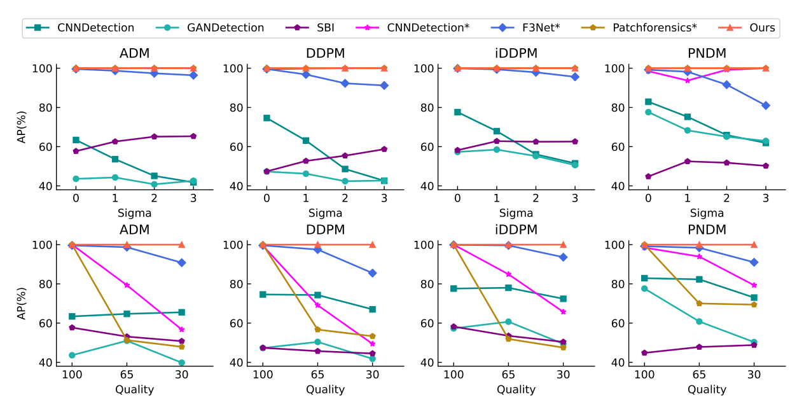

RGB / dấu vết ảnh
CNNDetection · GANDetection
Phân loại từ pixel RGB; benchmark này dùng checkpoint huấn luyện trên ProGAN.
Kết quả paper thấp trên generator ngoài tập train; đây không phải cùng protocol với nhóm retrain.demo sản phẩm · 2026
Dự án tái lập DIRE — Diffusion Reconstruction Error — của Wang và cộng sự (ICCV 2023). Demo này giải thích phương pháp và chỉ trình bày kết quả đã công bố trong paper; chưa gán số hiệu năng nào cho repo.
← → để chuyển slide · nhấn ? để xem phím tắt
Vấn đề
“Ảnh do diffusion sinh ra không còn lỗi nhìn thấy được — mọi dấu vết đều nằm ở tầng thống kê.”
Với ảnh 224×224, mắt người gần như không phân biệt được ảnh LSUN thật và ảnh do ADM sinh. Kiểm tra bằng mắt không còn là một phương án, nên cần một detector — và một detector cần một đường đo đáng tin.
Bối cảnh · detector trong benchmark
CNNDetection · GANDetection
Phân loại từ pixel RGB; benchmark này dùng checkpoint huấn luyện trên ProGAN.
Kết quả paper thấp trên generator ngoài tập train; đây không phải cùng protocol với nhóm retrain.F3Net*
Nhóm tác giả đưa bản huấn luyện lại vào đối chứng trên ADM subset.
Trong Table 2, so sánh chặt hơn với DIRE nhờ cùng tập train; không đồng nghĩa với detector tần số luôn kém bền.PatchForensics · SBI
PatchForensics học dấu vết cục bộ theo patch; SBI dùng self-blended training cho face forgery.
Paper dùng checkpoint FF++/nhiều nguồn; PatchForensics* là bản retrain ADM riêng. Khác miền với ảnh bedroom diffusion.Ảnh → tái tạo bằng ADM/DDIM → DIRE map → ResNet-50
Classifier nhận bản đồ sai số pixel-wise giữa ảnh và ảnh tái tạo.
Đóng góp chính là representation DIRE; Table 5 cho thấy DIRE đơn lẻ thường chuyển tốt hơn RGB hoặc REC.Các số là trung bình ACC/AP qua 8 generator của paper. Chỉ nhóm * và DIRE cùng được train trên ADM subset; 4 detector gốc có tập train khác.
| Phương pháp | ACC | AP | Train |
|---|
Paper Table 2 đặt DIRE (ADM) cao hơn các baseline retrain *. Đây là kết quả trong thiết lập paper, không phải số của repo; baseline pretrained còn khác train set và preprocessing.
Bằng chứng · Table 5 của paper
Cùng detector benchmark trên các đầu vào khác nhau: ảnh tái tạo (REC), ảnh RGB, RGB + DIRE và DIRE.
| Đầu vào | ADM | DDPM | iDDPM | PNDM | SD-v1 |
|---|
Nguồn: Wang et al. (2023), Table 5 · kết quả paper, train trên ADM subset. Chỉ bốn generator hiển thị; phạm vi paper không đại diện mọi mô hình hay miền ảnh.
Độ bền · Figure 4 của paper

Kết quả trong hình là benchmark của tác giả. Dùng để minh họa độ bền; không quy thành số đo của nhóm.
Ý tưởng · DIRE
x₀ → x₁ … x_Tforward, quá trình Markovx → z_TDDIM — tất định, nên mới đảo đượcz_T → x̂cùng model, cùng số bước|x − x̂|3 kênh → “DIRE map”Vì sao hiệu này là dấu vết: ảnh do model sinh ra nằm trên manifold của chính model đó → tái tạo gần như trùng → hiệu nhỏ. Ảnh thật nằm lệch manifold → bị kéo về → hiệu lớn.
Đây là trực giác hình học. Paper đo bằng thực nghiệm trên nhiều generator, không chứng minh bằng lý thuyết.
Bằng chứng
| Generator | ACC | AP |
|---|
·
Trạng thái thật
Không có mục nào được đánh “xong” nếu chưa chạy thật trên dữ liệu đầy đủ — kể cả khi code đã có test xanh. Test xanh chỉ chứng minh code không hỏng, không chứng minh nó đã chạy.
Giới hạn
# 1. kiểm môi trường + test
bash scripts/check.sh
# 2. tải dữ liệu tối thiểu rồi verify
modal run -m dire_modal.download::main --tiers e2min --mode fetch
modal run -m dire_modal.download::verify
# 3. eval bằng checkpoint của tác giả — in CỔNG S2
modal run -m dire_modal.eval::main --tiers e2minTrang tĩnh, không phụ thuộc CDN, không gửi dữ liệu đi đâu.
Số liệu do platforms/site/build.py sinh ra từ chính repo.